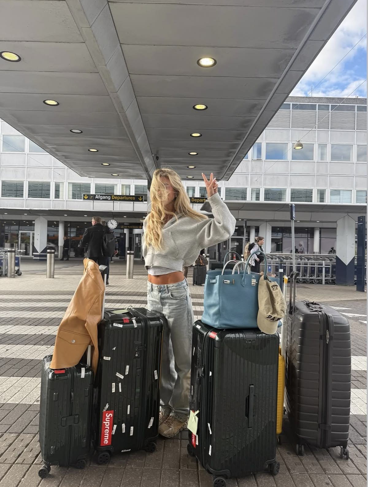
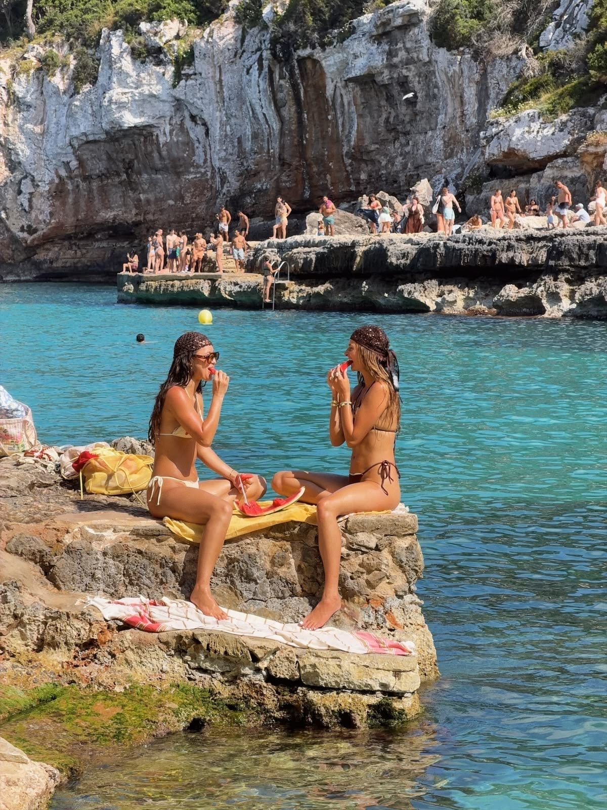
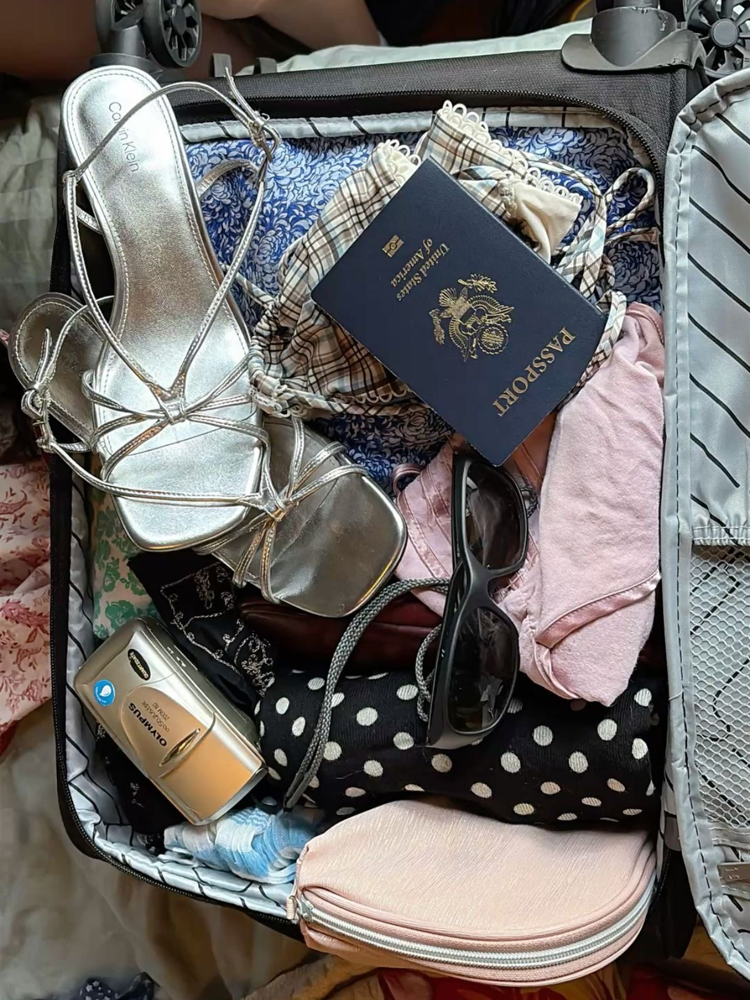

03 / The wardrobe edit
Outfits with places to be.
The pieces that make the suitcase cut, from airport mornings to coastal weekends. Cute, wearable, and made for repeat outfits.

Look 01 / Travel day
The airport uniform.
Relaxed denim, a soft layer, your most comfortable shoes, and a bag that keeps the essentials close. Travel days are long—comfort is part of the look.
Look 02 / City day
Walking all afternoon.
A breezy top, an easy skirt or shorts, sunglasses, and shoes you can actually walk in. The best outfit is one you don't have to think about all day.


Look 03 / By the water
Coastal weekend energy.
Swimwear, a lightweight cover-up, sun protection, and sandals. Pack pieces that can take you from the water to a casual lunch without a full outfit change.
Photo diary
A little outfit inspiration.

